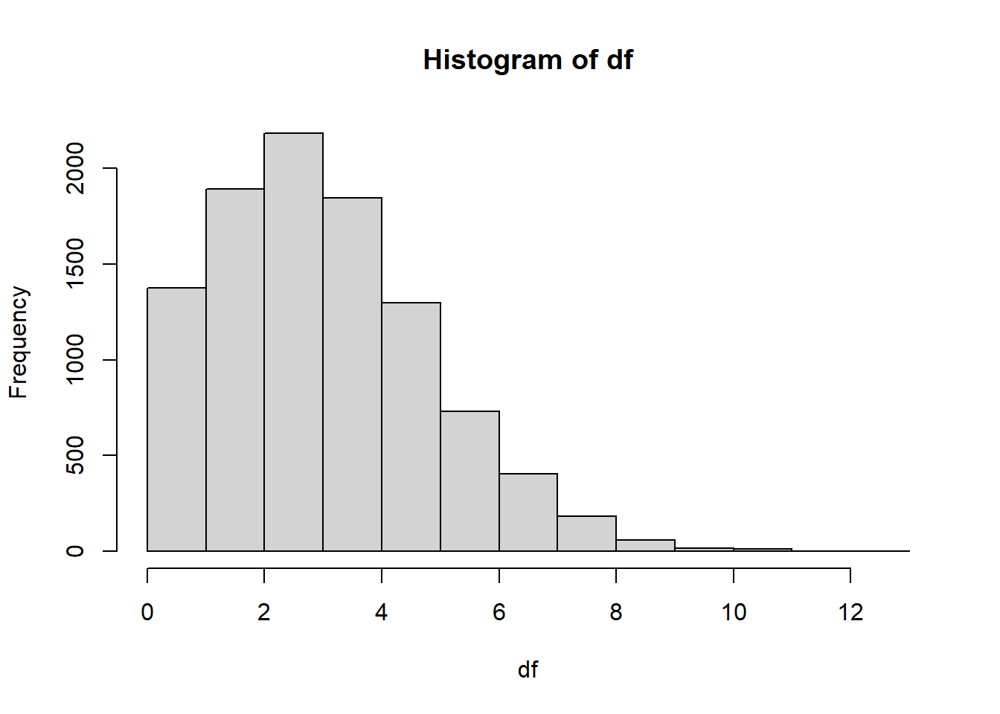

Continuing an Investigation of Primate Life History Databases
Introduction
The AABA presentation invited lots of constructive feedback and lots of people found our work interesting and wanted to follow it going forward. I’ve been thinking about the structure of our analysis; the comparative summaries and variable definition checks are a good start but I believe more objective evidence of the life history database problem lie in the metadata. I was talking to someone (Sasha Winkler of Duke, I think) about why we didn’t include the All the Worlds Primates database. While our primary reason was the cost of access, a part of that justification was realizing it cited all of our other five data sets. We didn’t see the point in paying for redundant data - ironic, considering I did not mention the cross referencing of our chosen databases in the presentation.
The main takeaway of my poster presentation was to be cautious in selecting a data set for your life history study. I believe the future of this project may lie more in line with Borries, Gordon, & Koenig (2013), demonstrating the material consequences of data quality through established methods in life history work, and expanding on the type of reference-checking that Carola outlined in her correspondence. I also want to respond to a few specific points, like the value of age at first reproduction compared to age at sexual maturity as a trait, the sex-stratification of age at sexual maturity in some sources (specifically, I want to check which species are divergent. I was told some species of Papio are.), and a literature dive to explore weaning age as a life history metric.
I didn’t catch many of the talks about weaning age at AABA. I have identified a few which I believe are important to Carola’s point and will contact the authors:
Zou R., Mi W., Jiang R., Breastfeeding and weaning in the Northeastern China over the past 10000 years by dentin micro-punches serial samples isotopic analysis
Dentice T., Reitsema L., Vassallo S., Kyle B., Exploring heterogeneity of Weaning Practices at Himera
Soto H., Oelze V,. Lonsdorf E., Murray C., McFarlin S., Fecal stable isotope analysis estimates nutritional weaning age in the Gombe chimpanzees (Pan troglodytes schweinfurthii)
Example
Sources
Borries, C., Gordon, A. D., & Koenig, A. (2013). Beware of Primate Life History Data: A Plea for Data Standards and a Repository. PLOS ONE, 8(6), e67200. https://doi.org/10.1371/journal.pone.0067200
Ernest, S.K.M. (2003), LIFE HISTORY CHARACTERISTICS OF PLACENTAL NONVOLANT MAMMALS. Ecology, 84: 3402-3402. https://doi.org/10.1890/02-9002
de Magalhães JP, Costa J. A database of vertebrate longevity records and their relation to other life-history traits. J Evol Biol. 2009 Aug;22(8):1770-4. doi: 10.1111/j.1420-9101.2009.01783.x. Epub 2009 Jun 10. PMID: 19522730.
de Magalhães, J. P., Abidi, Z., Dos Santos, G. A., Avelar, R. A., Barardo, D., Chatsirisupachai, K., Clark, P., De-Souza, E. A., Johnson, E. J., Lopes, I., Novoa, G., Senez, L., Talay, A., Thornton, D., To, P. K. P. (2024) “Human Ageing Genomic Resources: updates on key databases in ageing research.” Nucleic Acids Research 52(D1):D900-D908.
IUCN SSC Primate Specialist Group. (2023). Report of the IUCN Species Survival Commission Primate Specialist Group, Issue 64 (2023). IUCN. https://iucn.org/sites/default/files/2024-10/2023-iucn-ssc-primate-sg-report_publication.pdf
Jones, K. E., Bielby, J., Cardillo, M., Fritz, S. A., O’Dell, J., Orme, C. D. L., Safi, K., Sechrest, W., Boakes, E. H., Carbone, C., Connolly, C., Cutts, M. J., Foster, J. K., Grenyer, R., Habib, M., Plaster, C. A., Price, S. A., Rigby, E. A., Rist, J., … Purvis, A. (2009). PanTHERIA: A species-level database of life history, ecology, and geography of extant and recently extinct mammals. Ecology, 90(9), 2648–2648. https://doi.org/10.1890/08-1494.1
Kappeler, P. M., Pereira, M. E., & Schaik, C. P. v. (2003). Primate life histories and socioecology. In P. M. Kappeler & M. E. Pereira (Eds.), Primate life histories and socioecology (pp. 1–20). The University of Chicago Press.
Myhrvold, N.P., Baldridge, E., Chan, B., Sivam, D., Freeman, D.L. and Ernest, S.K.M. (2015), An amniote life-history database to perform comparative analyses with birds, mammals, and reptiles. Ecology, 96: 3109-3109. https://doi.org/10.1890/15-0846R.1